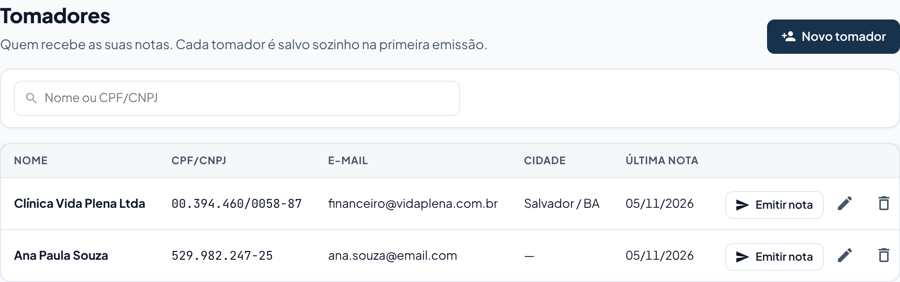
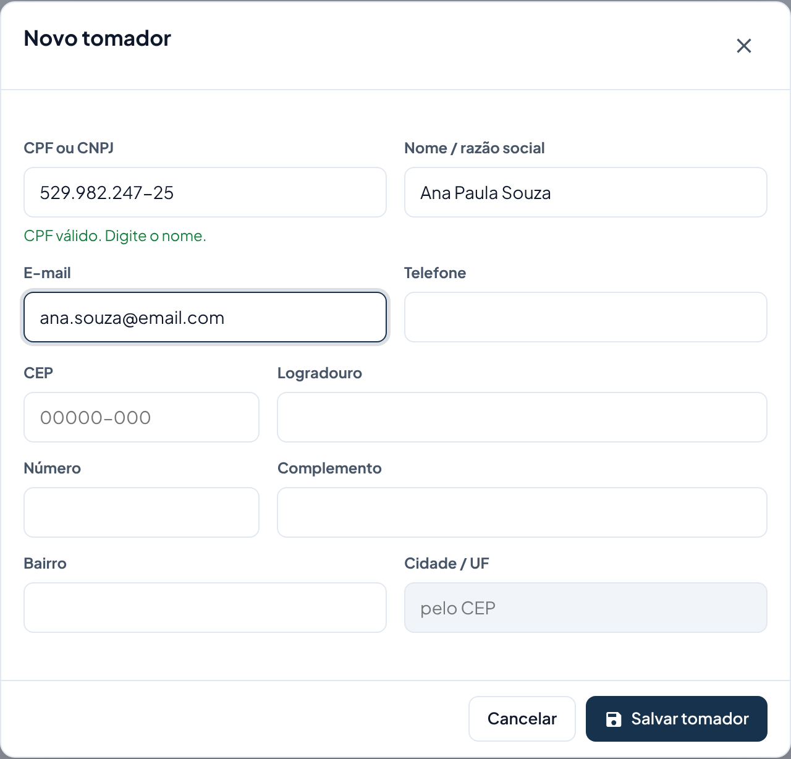
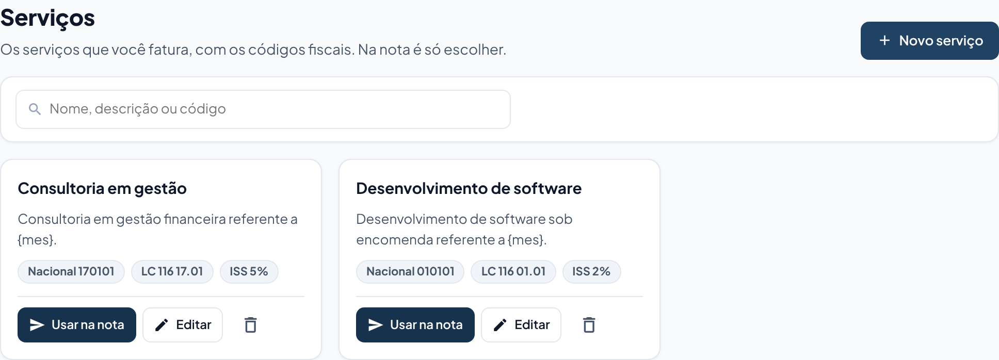
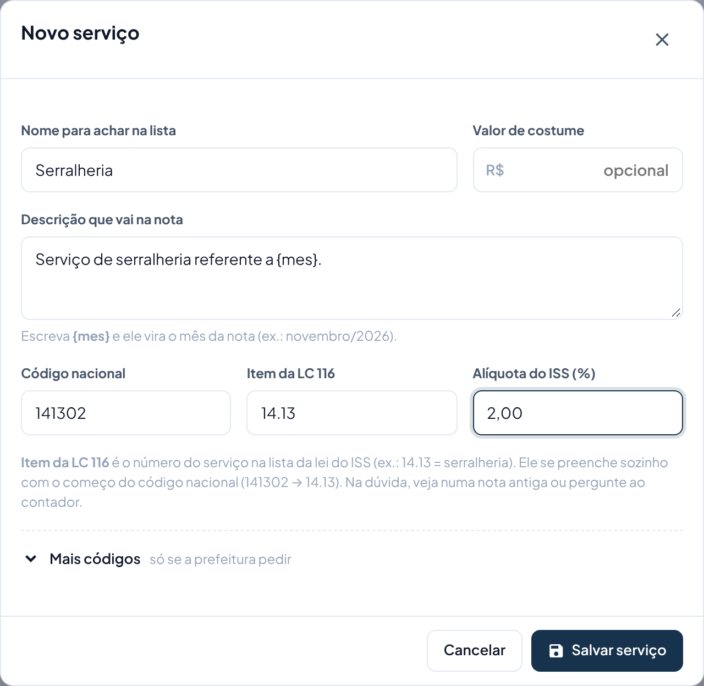

Cadastrar tomadores e serviços
Cadastre uma vez e, na hora de emitir, é só escolher na lista.
lightbulb Antes de começar
- Tomador é quem contratou o seu serviço e recebe a nota.
- Você não precisa cadastrar antes: o tomador é salvo sozinho na primeira nota, e o serviço também, se você deixar marcado "Salvar este serviço".
- Para o serviço, tenha os códigos fiscais à mão: estão numa nota antiga da empresa ou com o seu contador.
Tomadores
-
Abra "Tomadores"
No menu, em Cadastros, clique em Tomadores. Use a busca para achar pelo nome ou CPF/CNPJ. Em cada linha, Emitir nota abre a nota já com o tomador preenchido.

-
Cadastre um tomador novo
Clique em Novo tomador. Digite o CPF ou CNPJ: com CNPJ, nome e endereço vêm sozinhos. Com CPF, escreva o nome. Coloque o e-mail para ele receber as notas. O endereço completa sozinho pelo CEP. Clique em Salvar tomador.

Serviços
-
Abra "Serviços"
No menu, em Cadastros, clique em Serviços. Cada cartão mostra os códigos e a alíquota. Usar na nota abre a nota já com o serviço escolhido.

-
Cadastre um serviço novo
Clique em Novo serviço e preencha:
- Nome para achar na lista: um nome curto, só para você (ex.: Serralheria).
- Descrição que vai na nota: o texto que o tomador vai ler.
{mes}vira o mês da nota (ex.: novembro/2026). - Código nacional: 6 números. O Item da LC 116 se preenche sozinho com o começo dele (141302 → 14.13).
- Alíquota do ISS: a porcentagem do seu serviço.
- Valor de costume (opcional): já vem preenchido na nota.
Clique em Salvar serviço.

Se der errado
| O que aconteceu | O que fazer |
|---|---|
| O CNPJ não trouxe o nome e o endereço. | Confira os números. Se estiver certo, preencha manualmente. |
| O CEP não completou o endereço. | Confira o CEP. Um CEP errado faz a prefeitura rejeitar a nota. |
| Não sei o código nacional ou a alíquota. | Veja numa nota antiga da empresa ou pergunte ao seu contador. Código errado pode gerar imposto errado. |
| Um tomador está com dado errado. | Clique no lápis da linha, corrija e salve. As notas já emitidas não mudam; só as próximas. |
← Voltar para a Central de Ajuda
Última revisão: 07/11/2026